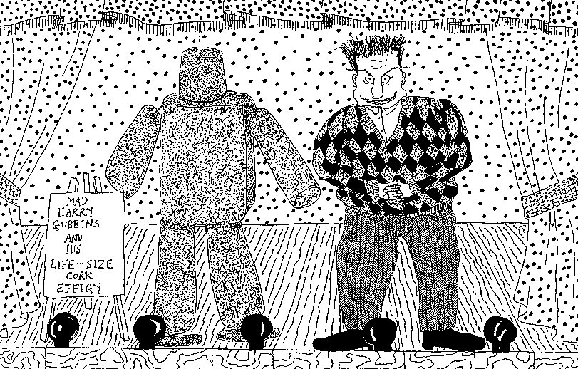

Monday, January the 5th, 2009
back to: title, date or indexes
I have recently been having a bash at doing some drawing again. I am not quite sure why I abandoned the practice, but I have to say that after all these years it is not coming easily to me. The best that can be said of the results so far is that they have the slapdash charm of an infant's daubs. Perhaps I shall persist, perhaps not. Anyway, here is an old one from the vaults, circa 1992. Click on the picture to see a bigger version, and lots of cross-hatching.
